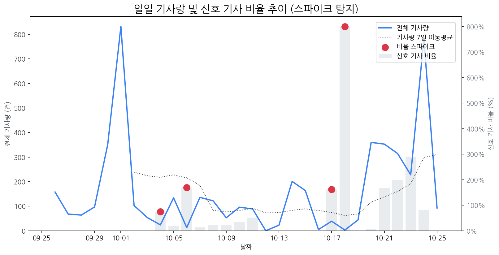

| 날짜 | 비율 | Z-Score |
|---|---|---|
| 2025-10-04 | 75.00% | 2.27 |
| 2025-10-06 | 169.23% | 2.05 |
| 2025-10-17 | 161.54% | 2.15 |
| 2025-10-18 | 800.00% | 2.22 |
| 모멘텀 토픽 | z_like 점수 | 누적 언급량 |
|---|---|---|
| 인텔 | 0.59 | 12 |
| 비전프로 | 0.34 | 6 |
| 퀄컴 | 0.34 | 18 |
| 구글 | 0.26 | 26 |
| 양산 | 0.24 | 24 |
| 날짜 | 유형 | 제목 |
|---|---|---|
| 2025-10-26 | LAUNCH | 삼성전자, 호주서 '가장 사랑받는 가전브랜드' 선정 |
| 2025-10-26 | LAUNCH | 삼성전자, 호주서 ‘가장 사랑받는 가전브랜드’ 선정 |
| 2025-10-26 | LAUNCH | 삼성전자, 호주서 소비자로부터 가장 사랑받는 가전브랜드 선정 |
| 2025-10-24 | INVEST,LAUNCH,ORDER | [더벨][삼성 인사 풍향계]이청 사장 취임 1년, 'IT OLED ' 조기 안정화 미... |
| 2025-10-24 | INVEST,ORDER | [IPO] ‘복합 환경시험 장비’ 이노테크, 공모가 상단 1만4700원 확정…기... |